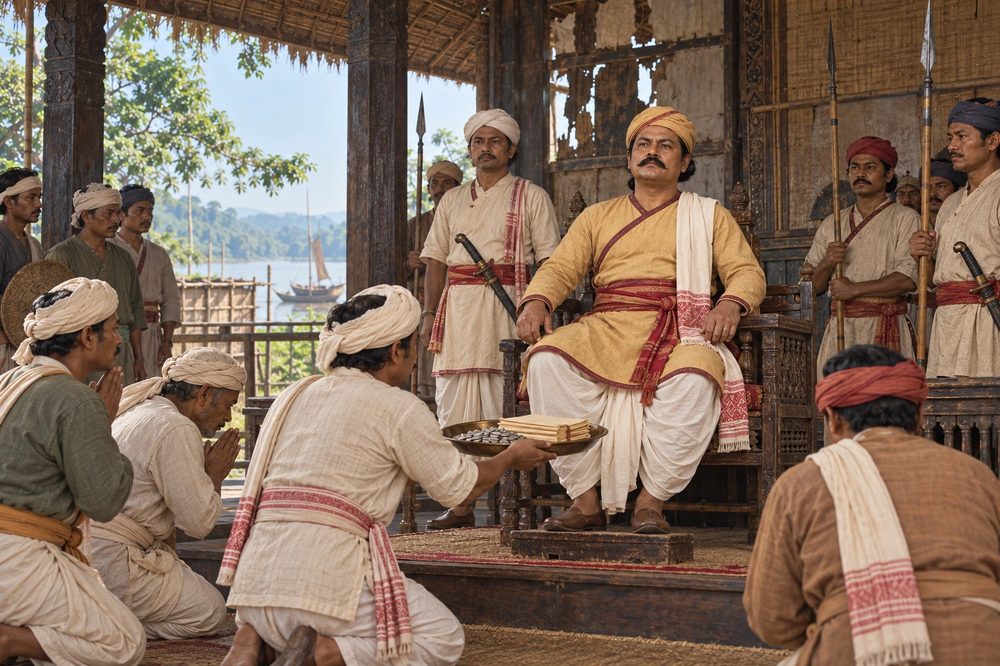

Bharat Singha Crowned at Rangpur
c. 1791 · The Moamoria risings

With Gaurinath in exile at Guwahati, the Moamorias install Bharat Singha as king at Rangpur. He strikes coins claiming descent from Bhagadatta, and is killed in 1799.
Coins in his name are dated 1789–94 and 1796–97. An imagined installation audience at Rangpur, not a documented coronation ritual. Coinage supports Bharat’s rulership but does not establish one exact accession year; miniature coins are not facsimiles.